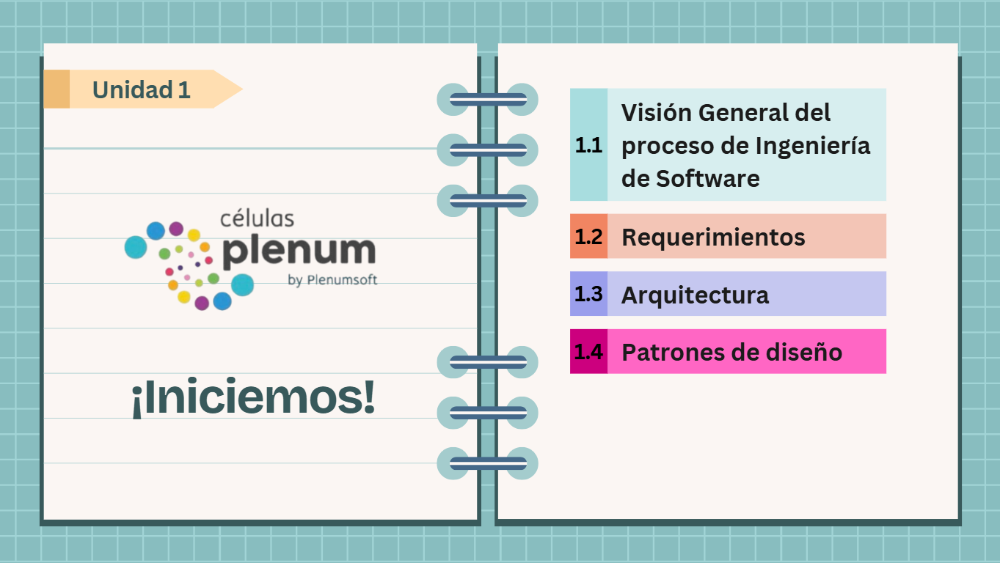

Unidad 1 - Inducción al Programa Células Plenum
Introducción a la Unidad 1
Bienvenido al Módulo 1. Nuestro objetivo es que los estudiantes se familiaricen con la plataforma, la metodología didáctica y los contenidos del Programa Células Plenum.

1.1 Visión General del proceso de Ingeniería de Software
1.1.1 Introducción a la Ingeniería de Software
1.1.2 Buenas prácticas en Gestión de Proyectos
Documento del Tema 1.1
1.2 Requerimientos
1.2.1 Principios de la Ingeniería de Requerimientos
1.2.2 Ingeniería de Requerimientos de Software
Enlace a lista de reproducción:
https://youtube.com/playlist?list=PLCVGhLzsMEq8-Q7Mrvq5Q6jrHo4nDJpod